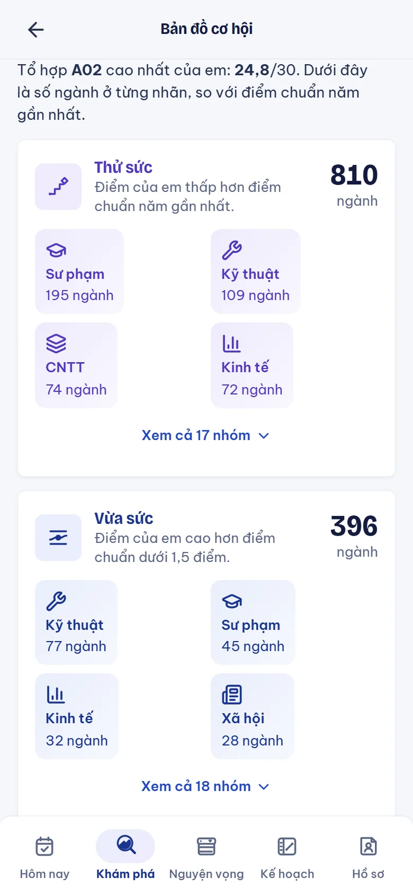
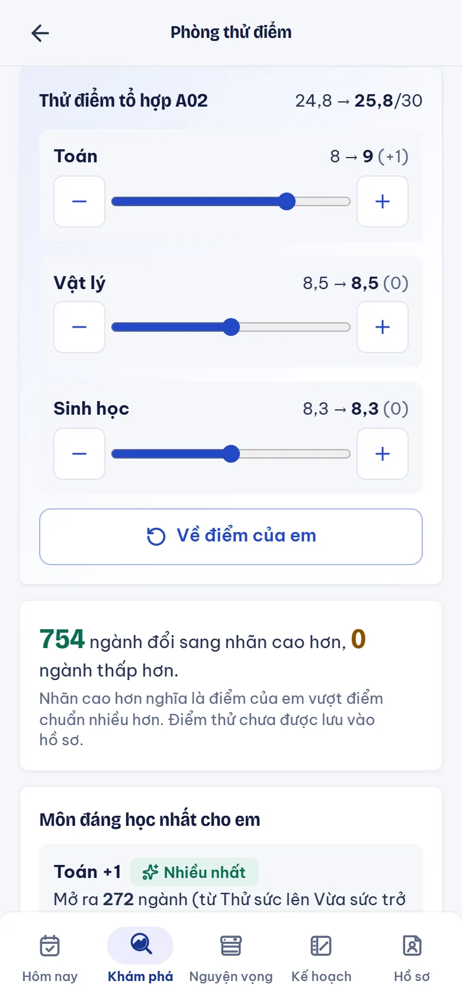
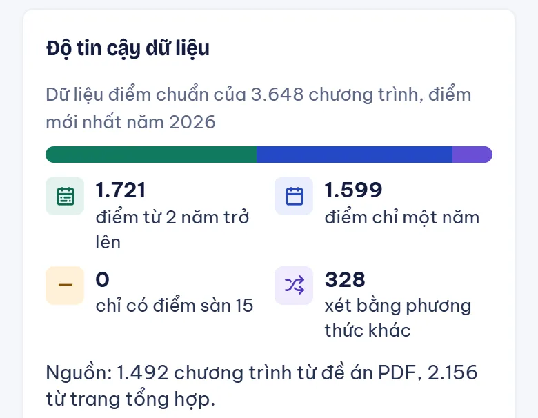
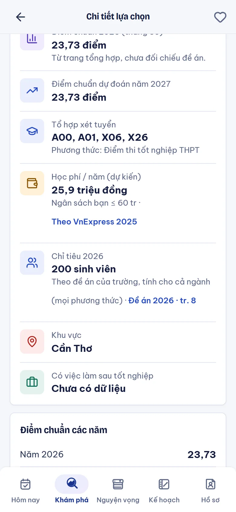

Hồ sơ mẫu Minh Anh là nhân vật giả định, không phải học sinh thật.
Cách em dùng điểm
Kéo điểm, thấy ngành đổi nhãn.
Bản đồ cơ hội: số ngành ở từng nhãn, chia theo nhóm ngành.
Phòng thử điểm: kéo cộng, trừ từng môn (tối đa 2 điểm), thấy ngay số ngành đổi nhãn. Chỉ xem thử, không lưu vào hồ sơ.
Ví dụ hồ sơ mẫu: thêm 1 điểm Toán, 754 ngành lên nhãn cao hơn.
Vừa sức nghĩa là điểm em cao hơn điểm chuẩn dưới 1,5 điểm.
So với điểm chuẩn năm gần nhất của từng ngành. Không phải xác suất đậu.

Bản đồ cơ hội

Phòng thử điểm
Dữ liệu
Mỗi con số có nguồn, và có nhãn độ tin cậy.

Trang Về dữ liệu
1.721
chương trình có điểm chuẩn THPT từ 2 năm
1.599
chương trình mới có một năm, chỉ để tham khảo
328
xét bằng học bạ, ĐGNL...: không so với điểm THPT
0
chương trình chỉ có điểm sàn. Điểm sàn không gọi là điểm chuẩn
Nguồn: 1.492 chương trình từ đề án PDF (kèm số trang), 2.156 từ trang tổng hợp. Điểm 2026 (2.082 dòng) lấy từ trang tổng hợp, chưa đối chiếu điểm chính thức của trường.
Kiểm chứng dữ liệu
Điểm bị sửa phải có hai bằng chứng.
Kiểm mẫu theo PDF
201/201
dòng điểm có phần lẻ khớp PDF nguồn: 93 dòng ngẫu nhiên và 108 dòng điểm nhảy mạnh.
Soi kỹ số nguyên
13 sai
trong 52 ô số nguyên nghi sai: 36 đúng, 3 chưa xác định. Lỗi thường là cột chỉ tiêu bị đọc thành điểm.
Ghi đè có bằng chứng
146 bản sửa
của 70 chương trình. Chỉ nhận khi bộ đọc tự động và mắt người cùng ra một số.
Giới hạn: đây là kiểm mẫu, không phải "chính xác bao nhiêu phần trăm toàn bộ". Số nguyên chiếm 45,5% số ô điểm và chưa kiểm hết. Điểm 2026: mẫu 20 dòng, 17 khớp trang nguồn, chưa dòng nào đối chiếu được với văn bản chính thức của trường.
Thuật toán giải thích được
Dự báo là khoảng tham khảo, có kiểm định.
Dự đoán 2027 lấy điểm năm gần nhất, kèm biên độ đo từ biến động thật giữa các năm.
Kiểm định bỏ-một-năm: khoảng 80% phủ điểm thật 91% (2023), 93% (2024), 77% (2025, năm biến động mạnh).
Chỉ tiêu đọc từ đề án của 10 trường: 421 chương trình, kèm trang PDF.
Cả 2.812 dự báo hiện ở độ tin cậy thấp vì nguồn chưa thẩm định độc lập. Không phải xác suất đậu.
Dự đoán 2027

Chỉ tiêu, học phí, nguồn
Phân định vai trò AI
Quy tắc làm gốc, AI chỉ để diễn giải.
Không dùng AI
Phần cần chính xác
Tính điểm, điểm ưu tiên
Nhãn nguyện vọng, cảnh báo thứ tự
Mã trường, mã ngành, xếp lịch
Thống kê
Phần cần ước lượng
Điểm dự đoán và biên độ
Kiểm định bỏ-một-năm
Nhãn độ tin cậy
Mô hình ngôn ngữ
Phần cần diễn giải
Trả lời, so sánh ngành bằng lời dễ hiểu
Chỉ nhận số liệu do app gửi kèm
Bị cấm nói "khả năng đậu x%"
Rào chắn:mã trường, ngành bịa bị loạichỉ trích nguồn có thậtthêm vào danh sách khi em bấm Xác nhận50 lượt mỗi ngàychế độ Tiết kiệm không gọi AI
AI thật chỉ chạy khi máy chủ có khóa API. Không có khóa, app trả lời từ dữ liệu có sẵn.
Kiến trúc và cộng đồng
Dữ liệu đổi mỗi mùa, nên có đường cập nhật có duyệt.
1
Báo sai, đăng ký
Em báo số sai ngay trên trang ngành. Người trong trường đăng ký làm tình nguyện viên.
2
Nhập trong CMS
Mỗi số kèm nguồn và số trang, chỉ đúng trường được giao.
3
Quản trị viên duyệt
Có nhật ký, quay về bản cũ được.
4
Xuất bản bản mới
Kiểm mã băm, app tải số mới.
Local-first
Hồ sơ nằm trên máy em, không tài khoản.
Lớp quyết định
Thuật toán TypeScript thuần, hơn 90 tệp kiểm thử.
CMS cộng đồng
Phân quyền theo trường, duyệt trước khi công bố.
Đã chạy thử trọn vòng ở máy. Hạ tầng thật (D1, Access) chưa dựng, chưa có tình nguyện viên thật.
Giới hạn trung thực
Đã làm gì, còn hạn chế gì, chưa làm gì.
Đã chạy, có kiểm thử
Phần lõi
3.648 chương trình của 118 trường, kèm nguồn
Hồ sơ ba bước, bốn nhãn, Bản đồ cơ hội, Phòng thử điểm
Kế hoạch tuần, xuất file lịch
CMS và đường cập nhật chạy được ở máy
Còn hạn chế
Dữ liệu chưa kiểm hết
Điểm số nguyên chưa kiểm hết
Điểm 2026 lấy từ trang tổng hợp, chưa có văn bản chính thức đối chiếu
Học phí: 662 ngành, nguồn VnExpress, chưa đối chiếu văn bản trường. Còn lại ghi "chưa có"
Chưa làm
Điều nhóm biết còn thiếu
Chưa thử với học sinh thật, chưa có số người dùng
Chưa có tài khoản, đồng bộ nhiều máy
Chưa áp dụng mô hình học máy; dự báo hiện là phép thống kê đơn giản
Không số người dùng, không lời chứng thực. Chỉ có số đo từ dữ liệu và kiểm thử.
Bước tiếp theo
Từ công cụ chạy được đến công cụ học sinh dùng thật.
Ngay bây giờ
Kiểm nốt dữ liệu
Đối chiếu điểm 2026 với thông báo chính thức của trường
Kiểm tiếp điểm số nguyên
1 đến 3 tháng
Có người dùng thật
Thử với học sinh THPT và thầy cô
Tìm tình nguyện viên ở vài trường
Mùa tuyển sinh 2027
Vòng lặp cập nhật
Nhập điểm chuẩn mới qua CMS có duyệt
So dự báo với điểm thật để chỉnh
Sau đó
Dựng hạ tầng thật
D1, Access cho CMS
Đồng bộ nhiều máy, nếu em muốn
Mỗi bước dựa trên dữ liệu đã kiểm và phản hồi thật từ học sinh.
Nguyện Vọng AI
Không thay học sinh quyết định. Giúp em chọn có căn cứ.